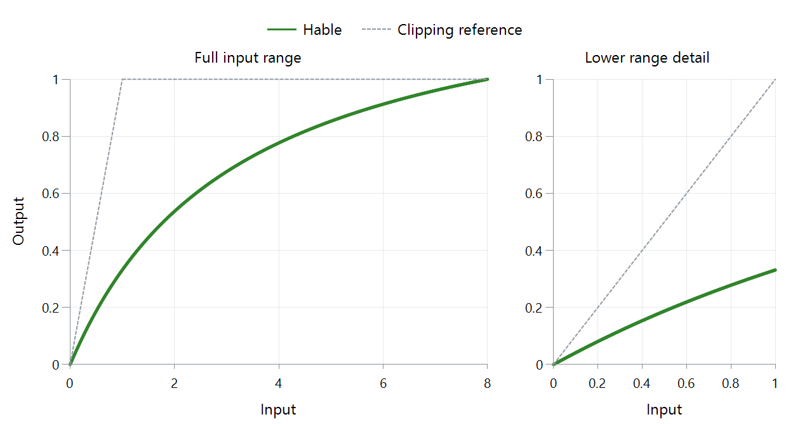

Tone Mapping Curve: Hable
Hable's filmic curve shapes the darker and middle region as well as rolling bright values toward white. The lower-range panel makes that whole-image behavior visible:

FFmpeg 8.1 scalar Hable mapping, source peak 8 and output white 1, neutral gray in relative linear light. Dashed gray is clipping.
Follow the ordinary values as well as the highlight
| Input | Output in this plotted example |
|---|---|
| 0.18 | About 0.0731 |
| 0.3 | About 0.1183 |
| 1 | About 0.3315 |
| 4 | About 0.7769 |
| 8 | 1 |
Lower values do not pass through unchanged. The curve allocates its output range across the whole input, so an ordinary object can become darker while bright regions retain gradations. The shoulder supplies less additional output as the input rises, compressing highlight separation.
John Hable developed the original response for Uncharted 2 and explains its filmic construction in the referenced articles. A toe shapes the transition out of black, the middle controls much of the apparent brightness, and the shoulder approaches the upper range gradually.
Reproduce the stated implementation
For FFmpeg's fixed coefficients, the unnormalized function is:
H(x) = [x(0.15x + 0.05) + 0.004] / [x(0.15x + 0.50) + 0.06] − 0.02/0.30
With source peak P, the plotted mapping is T(x) = H(x) / H(P). This normalization makes the assumed source peak land at output white. It also affects other points: at x = 1, P = 8 produces about 0.3315, while P = 4 produces about 0.4266.
The peak assumption is thus part of the image transformation, not merely a label on its brightest point. If an Emby route uses this mapping, comparing the source peak and surrounding conversion explains why two runs can differ with the same curve name.
The HDR-to-SDR example shows where brightness mapping sits between source interpretation and output encoding. Use the lower panel here to inspect the ordinary objects whose brightness that mapping changes.